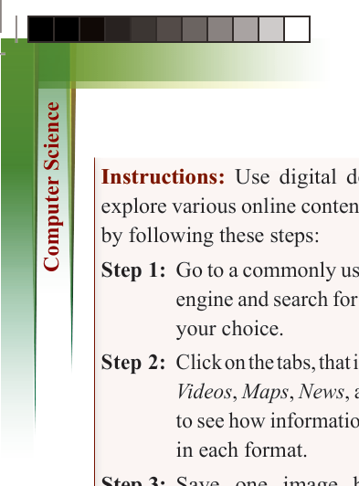
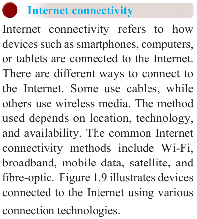

16
for Secondary Schools

Instructions: Use digital devices to
explore various online content services by following these steps:
Step 1: Go to a commonly used search
engine and search for a topic of
your choice.
Step 2: Click on the tabs, that is, Images,
Videos, Maps, News, and Books
to see how information appears
in each format.
Step 3: Save one image by right-


clicking (or tap and hold) and

selecting “Save image as…”


Step 4: Note the type of content found in


each section (such as pictures,

videos, maps).

Step 5: Write a short summary of what


you found.

Step 6: List three trusted websites you


visited (look for .tz, .gov, .edu,


or .org).


Step 7: Name at least two document


formats you came across.

Deliverables: Saved Image File; A


brief description (1 to 2 sentences) of

what was found in each tab: Images,
Videos, Maps, News, and Books; A
3 to 5 sentence summary of the main
information discovered during the
search; A list of three trusted websites
visited (with domains like .tz, .gov, .edu,
or .org) and Document Formats List.

Exercise 1.2
1. Explain how the Internet can help
students learn better both in school
and at home.
2. Imagine your class is preparing
a group research project. Which
Internet tools or websites would
you use to find information, and
why?
3. Using any search engine, how would you search for information
about climate change? Write the
exact keywords you would type.
4. Give an example of a situation
where sending an email or message
online could save time or help
solve a problem. Describe how it works.
5. Sometimes we find false or harmful information online. What can you
do to check if what you are reading
is true and safe to use?

Internet connectivity
Internet connectivity refers to how
devices such as smartphones, computers,
or tablets are connected to the Internet.
There are different ways to connect to
the Internet. Some use cables, while
others use wireless media. The method
used depends on location, technology,
and availability. The common Internet
connectivity methods include Wi-Fi, broadband, mobile data, satellite, and
fibre-optic. Figure 1.9 illustrates devices
connected to the Internet using various
connection technologies.

ComputerScin